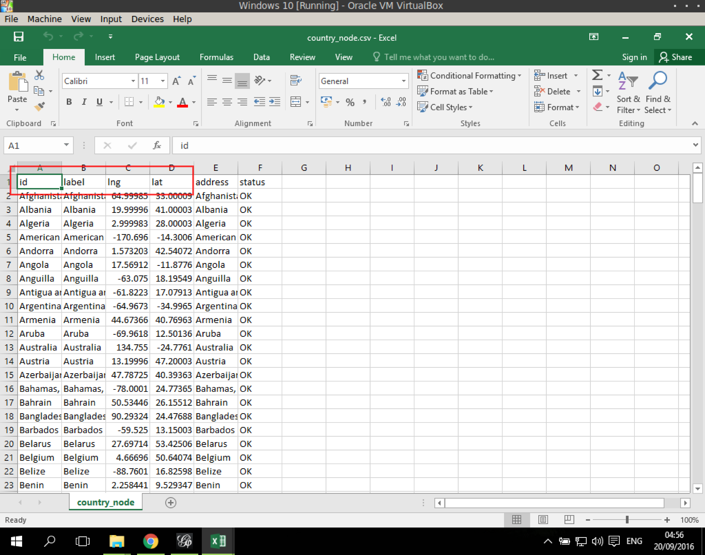
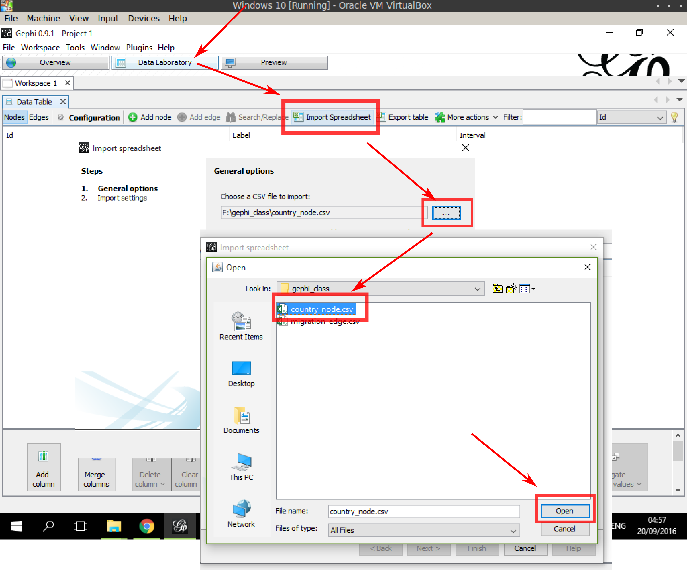

匯入
準備好 節點及連線的 csv 檔，匯入 Gephi 製作網絡。 以下以從 Worldbank 下載的國家間遷移資料，整合 透過批次定位(arcgis/google)後產生的國家經緯度資料，製作網路。 遷移資料來源： Worldbank
資料準備
節點資料 (country_node.csv)，是國家(遷移單位)，以下是欄位說明：
- id (必須): 必須爲 unique，即沒有兩個節點有同樣的 id，用作對應連線兩端資訊
- label: 作爲網路呈現時，顯示在節點上的 label
- lng: 節點的經度
- lat: 節點的緯度
- address: 定位用(國家名)
- status: 定位結果

連線資料(migration_edge.csv)，是國家間的遷移流量，這裏用的是 2000年的資料：
- eid: 連線的 id
- Year/Year Code: 年份資訊
- source (必須): 連線的起點 id
- target (必須): 連線的端點 id
- Country Origin Code / Country Dest Code: 來源與目的地國家代碼
- Weight: 網路分析中用以作爲連線權重的分析資訊，這資料中是用總流量作爲權重
- Total / Female / Male: 總流量、男性流量、女性流量，男女性流量資料不完整，有一些國家只有總流量資料
- dist1 / dist2: 兩點之間的最短距離(大圓航線)，會有一些出入(因計算的解析度不同)
匯入過程
在第二分頁內，點選 Import Spreadsheet，選取 節點檔案 (country_node.csv)，點打開

確定資料選對了之後，按下一步
Import settings 中，往下拉，找到 lng 及 lat，在下拉選單中選擇 Double (應該在 String 的上面)，按完成
節點資料表出現已匯入的資料表，再選一次 Import Spreadsheet
這次選取連線的檔案 (migration_edge.csv)
確定資料選對了之後，按下一步
Import settings 中，往下拉，找到可能會用來畫顏色的欄位，在下拉選單中選擇 Double，並且確認 Create missing nodes 左邊的空格 不要打勾 ，最後按完成
回到 Overview 分頁，可以看到一團分佈呈方形的網路出現